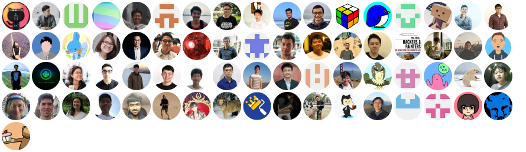

<div id="">
    <section id="apps-pwa">
        <div class="container">
            <div class="row">
                <div class="col-md-6">
                    <div class="secs-icons">
                        
                    </div>
                    <div class="pwa-cont">
                        <h3> NUSMods </h3>
                        <p> Up until recently, <b>NUSMods</b> had been hosted on Digital Ocean.
                            <p>
                                <b>NUSMods</b> have onboarded our Student Development Platform with the recent
                                transition from Digital Ocean to AWS,
                                thanks to the efforts of the developers (NUS students and alumni).
                            </p>
                        </p>
                        <h3> Benefits of NUSMods when onboarding SDP</h3>
                        <p> More storage? Fill in here...</p>
                        <h3> Contributors</h3>
                        <p> We would like
                            to thank all contributors who’ve dedicated
                            their time, energy, and
                            expertise to the NUSMods project.
                            The contributors to the project are shown on the right
                            (image taken from NUSMods' GitHub README). </p>
                        <p> Contributors to NUSMods are also mentioned <a
                                href="https://nusmods.com/contributors"> here</a>.</p>

                        <p> We also want to give big thanks to our NUS friend <a
                                href="https://github.com/taneliang"> Tan E-Liang </a>
                            and Mr. <a href="https://www.linkedin.com/in/daniel-a347434/">Daniel</a> from NUS IT
                            for migrating NUSMods to our Student Development Platform. </p>
                    </div>
                </div>
                <div class="store-icons">
                    <a href="https://www.digitalocean.com/" target="_blank">
                        
                    </a>
                    <a href="https://www.apple.com/" target=" _blank"></a>
                </div>

                <div class="blue">
                    <a href="https://github.com/nusmodifications/nusmods" title="NUSMods Repo"> NUSMods
                        Repo </a>
                </div>

            </div>
        </div>
        <div class="col-md-">
            <div class="home-tab">
                <div class="home-tab-content active">
                    <div class="home-ang-det">
                        
                    </div>
                </div>
            </div>
        </div>
</div>